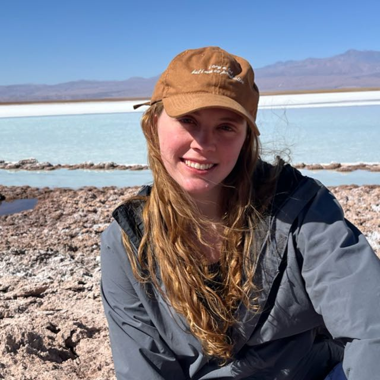

Product Designer com foco em estratégia — investigo o problema antes de desenhar a solução.

Trajetória
Me formei em Desenho Industrial pela UFF em 2019 e, três anos depois, fiz uma pós em Inovação, Design e Estratégia na ESPM. O nome do curso já entrega bem para onde minha carreira foi depois, mas na época eu ainda não sabia.
Entrei em design de produto em 2019, numa empresa de e-commerce de produtos físicos e licenciados. Cuidava do roadmap anual, de custo e acompanhamento de produção, e de parcerias com marcas licenciadas, o que incluiu viajar para feiras internacionais na Ásia e visitar as fábricas de perto.
Em 2021 migrei para produto digital, numa plataforma B2B SaaS de gestão de frotas. Comecei como designer júnior e passei por pleno, supervisão e coordenação de design, sempre em discovery de ponta a ponta, da conversa com o cliente até a interface. Nesse caminho também passei a estruturar time: onboarding de estagiários, mentoria e o Design System da empresa, hoje adotado em quase toda a plataforma.
Mais recentemente acumulei a coordenação de design com um papel híbrido de PM e UX numa iniciativa de escopo organizacional, puxando uma meta estratégica da empresa junto com CS, Supply e Engenharia. Esse projeto está documentado como case aqui no portfólio, no Basic Value.
Como eu trabalho
Gosto de investigação e de colocar a mão na massa. Antes de propor qualquer solução, quero entender o problema do jeito que o cliente vive ele: entrevista, gravação de sessão, análise de dado de uso. Não me contento com um diagnóstico genérico, prefiro causas raiz específicas a uma lista vaga de sintomas.
Também gosto que esse diagnóstico vire algo que outras áreas conseguem usar, não só um relatório de UX. Prefiro transformar a investigação numa métrica ou num critério de priorização que times como CS, Supply e Produto adotem em conjunto, para que a solução não dependa só de mim para continuar de pé.
Fora do trabalho
Estou quase sempre ao ar livre: caminhada, trilha, qualquer desculpa para sair de casa. Também gosto de artesanato e de fazer coisas com as mãos, o contraponto analógico de passar o dia inteiro em frente a uma tela.